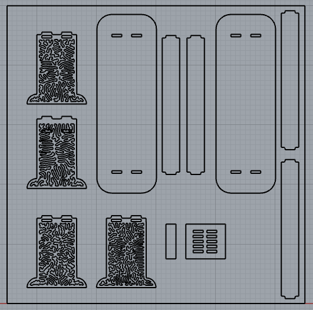

file formats & path planning
making!
ideation & training
On Monday, we got trained on the ShopBot. After getting over the fact that it's (perhaps) the scariest machine in the shop, it was very satisfying for the machine to turn from 'big thing that takes up all of room 112' to 'tool that i can safely use'! The UI was the subject of many but to be honest I love it, it feels like what's on the other side of the 'you're the 1,000,000 visitor click here to redeem your prize!' button. I contemplated trying making a small rocking chair, but decided that 4'x4' wouldn't make something terribly functional. (We ended up getting 5'x5' plywood, but still). We have a very low couch which we've been struggling to find suitable side tables for, so I instead opted to make a one - and leveraging the power of CNC, I could make two matching ones!press fit joints
Having never made a piece of furniture before, I decided to make the mechanical design as simple as possible and get more creative on the patterning. (as we'll see... perhaps not simple enough :') Press-fit joints seemed like a fun option instead of using nail/glue during post-processing. Though I've done 3D printed press-fits for e.g. cardboard, I learned that the rounded corner created by the endmill requires a dog-bone or T-bone joint. Though at first I directly modeled this in Rhino, I later learned that VCarve can add these automatically. After measuring the space next to the couch, I decided on a 12"x32"x14" table; this brings the tabletop just above the top of the couch. The overall design is very simple: the tabletop is just a filleted rectange, with two legs slightly shaped. I wanted to keep a nice face of plywood on the legs to add some pattern onto it.differential growth pattern
I wanted to get more familiar with Kangaroo, so I tried to create an organic pattern generated from physics simulations. First I learned about the 'SphereCollide' component which simulates collisions between equal sized spheres. Working from some resources online, I ended up with this 'differential line growth' pattern where the frame of the leg is divided into control points, which are inputs the the SphereCollide component. Using a LineLength component, the solver tries to keep each sphere a constant distance apart while simulating collisions to avoid overlaps. The video shows me slowly increasing the target distance between points.You can get slightly different patterns by changing the target distance/number of points, so I created a different pattern for each leg. Here are the final designs; the square in the middle is a press-fit test, to see what width works best to join pieces together.

construction & assembly
I made... quite a few mistakes in my constructions. Which is to say, I learned a lot! Some general tips & caveats for my own long-term memory:- Clamps take up space (like clips for a 3d printer bed), and (0,0) will not be exactly at the bottom left of the material! I designed my toolpaths exactly within a 5'x5' square, but the working area is smaller than this. It was helpful to jog the machine to the x/y maxima to make sure everything would fit based on my zeroing
- Cut parts move! I generated toolpaths for my squiggly pattern after the outer part. Though I added tabs, the pattern jerked the material around enough to snap them and I had to stop the job. I should have cut the pattern first, then cut the outline.
- After stopping a cut, move Z first! After stopping the print, I moved the machine over in X first to home, but the end mill was still in the wood. Sorry for breaking it, RIP endmill :'(
- Double-check toolpaths! I cut the holes with an outer rather than inner cut, meaning the holes are all to big. My press-fit test would have caught this... but alas, it did not pop out.